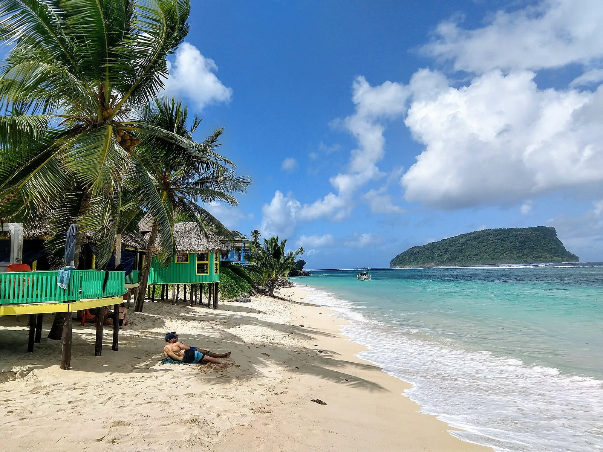

Lalomanu
Upolu, Samoa · baignade, snorkeling

Plage de sable blanc à la pointe est d’Upolu, face à l’îlot de Nuʻutele, bordée de fale traditionnels. Le lagon clair invite à la baignade et au snorkeling.
- Lieu
- Upolu, Samoa
- Niveau
- Débutant
- Activités
- baignade, snorkeling
- Type d'eau
- Mer / océan
- Coordonnées
- -14.05, -171.45 (position approximative du secteur)
Dangers à connaître
- Courants près de la barrière de corail et des passes.
- Corail et oursins dans le lagon peu profond.
Le conseil d'Ocean Buddy
Reste à l’intérieur du lagon et repère les panneaux d’évacuation tsunami de la côte.
Ouvrir dans Ocean Buddy Télécharger sur l'App Store
Source : Fiche Ocean Buddy · septembre 2026 · à vérifier localement.